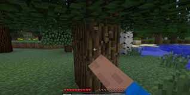
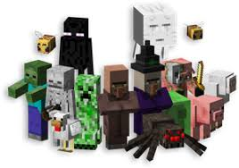
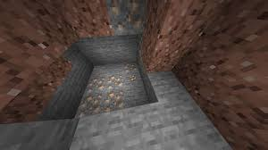
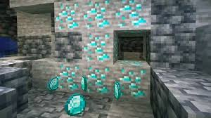
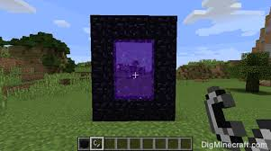
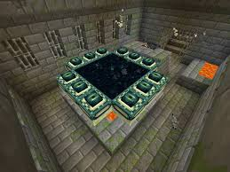

This page will tell you how you should start minecraft and how to beat it in the long run. When you start a new world,
you should get wood. Then make some wooden tools to get stone with.
You will encounter many different mobs on your journey. Some are nice and some are mean. One even explodes. Have fun!

Once you get stone then you need find a cave and get iron. After that you can get diamonds.
 
you can now get obsidion to make a nether portal. light it up with fire and jump through. In the nether you need to get blaze rods from Blazes and Ender Pearls from Endermen.

Then put the two together to make Eyes of Ender.
They will lead you to the Stronghold, there will be a portal in there. You need to put the Eyes of Ender in the portal. Jump through it and fight the boss.

Once you have defeated the boss, you will have beat Minecraft!